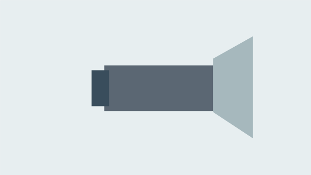
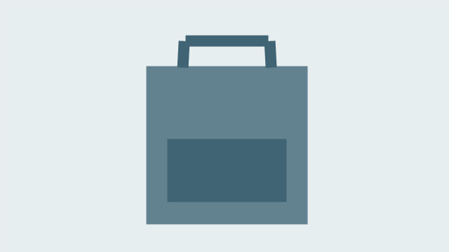
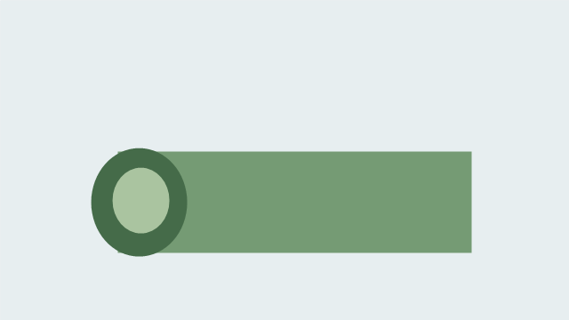

Вариант 36 — Снаряжение рядом
Ваше веб-приложение — «Снаряжение рядом · V36». Сохраните номер 36 на всём протяжении работы. Фамилия в приложении не требуется.
Здесь находятся ваши данные: тексты, изображения и цвета. Действия по шагам и код — в статьях занятий. Выполняйте только текущий этап.
Демонстрационный вариант 00 «Техника дома» помогает изучить способ работы по статьям. Выполняйте свой номер 36: названия, изображения, подписи и значения берите из этого листа.
Что сделать сейчас
Пары 13–14: продолжайте свою папку Variant36-web по статье 13: главная и каталог, затем статье 14: HTML-форма. Основное содержание идёт сверху вниз, меню — горизонтально с переносом; используется общий CSS.
Читайте в статье по одному шагу: измените указанный файл, сохраните, обновите браузер и выполните самопроверку. После успешной проверки переходите дальше без подтверждения преподавателя. Если результат не совпадает с ожидаемым, используйте помощь нужного шага и таблицу типовых ошибок. Если ошибка сохраняется, укажите файл, ожидаемый и фактический результат и выполненные проверки. Преподавателю показывают итог, а не каждый этап; отдельные отчёты по шагам не нужны.
| Занятие | Результат для вашего варианта |
|---|---|
| 13 — главная и каталог | Сохраните главную «Подготовьтесь к прогулке» в index.html; создайте catalog.html «Каталог снаряжения» со всеми тремя позициями ниже. Подключите общий style.css, сохраните изображения в images и проверьте переходы в обе стороны |
| 14 — HTML-форма | Добавьте form.html «Заявка на прокат» с шестью элементами из таблицы и кнопкой «Выбрать прокат». Свяжите все три страницы меню и выполните самопроверку ниже |
Сохраните прежний проект. Если главной ещё нет, восстановите её по статье 10; список из двух названий и ссылка внутри страницы разобраны в статье 11, смысловые части и общий CSS — в статье 12. Сложная компоновка изучается позднее. JavaScript, обработка заявок и PWA появятся на следующих этапах.
Содержание главной страницы
| Элемент | Ваш текст или изображение |
|---|---|
| Название приложения | Снаряжение рядом · V36 |
| Заголовок главной | Подготовьтесь к прогулке |
| Короткое пояснение | Снаряжение для небольшой поездки |
| Описание | Три предложения для выбора. Снаряжение для небольшой поездки. |
| Основное изображение | item1.png  |
| Название перехода к каталогу | Открыть каталог |
| Название перехода к форме | Выбрать прокат |
| Подпись | Учебный прототип · Вариант 36 |
На паре 13 сохраните тексты главной и подпись. Для перехода на отдельный каталог используйте указанное название; на паре 14 добавьте переход к форме с названием из таблицы.
Содержание каталога
Название — «Каталог снаряжения». Пояснение — «Выберите одну из трёх позиций».
| № | Название | Характеристика | Описание | Файл изображения |
|---|---|---|---|---|
| 1 | Фонарь | Три режима · 1 комплект | Свет для вечерней прогулки | item1.png |
| 2 | Рюкзак | 30 литров · 1 комплект | Для вещей и короткого маршрута | item2.png  |
| 3 | Коврик | 180 см · 1 комплект | Для остановки и отдыха на природе | item3.png  |
Сохраните готовые изображения в Variant36-web/images с именами из таблицы; для главной используйте item1.png. Рисовать их заново не требуется. Разрешены собственные изображения по тем же сюжетам.
На паре 13 используйте все три позиции в указанном порядке. Для каждой позиции нужны отдельный article, название в h2, изображение с описанием alt, характеристика и описание. Разместите их обычными блоками сверху вниз. Первую позицию «Фонарь» соберите по образцу статьи со своими данными, вторую «Рюкзак» — по структуре, третью «Коврик» — самостоятельно.
Содержание формы — пара 14
Название формы — «Заявка на прокат». Располагайте все элементы сверху вниз строго в порядке строк. Это порядок именно вашего варианта, включая положение ползунка и обоих флажков.
| Порядок | Видимая подпись | Элемент | Данные и начальное состояние |
|---|---|---|---|
| 1 | Срок проката | Ползунок | От 1 до 5; начальное значение 4. Края: «1 день» и «5 дней» |
| 2 | Условия поездки | textarea |
Подсказка: «Опишите ваши пожелания»; заполнение необязательно |
| 3 | Название предмета | select |
Первая строка — пустой выбор; затем Фонарь; Рюкзак; Коврик. Выбор обязателен |
| 4 | Количество комплектов | Числовое поле | Целое количество от 1; шаг 1; начальное значение 4; поле обязательно |
| 5 | Нужна упаковка | Независимый флажок | Не выбран в начале |
| 6 | Нужна инструкция | Независимый флажок | Выбран в начале |
Текст кнопки отправки — «Выбрать прокат»; кнопка идёт после всех элементов. За формой разместите ссылку «Назад» на index.html. У каждого поля, флажка и ползунка должна быть видимая подпись, связанная через for и уникальный id; у отправляемых элементов — name. Подсказка внутри многострочного поля не заменяет подпись. Флажки переключаются независимо.
Локальная отправка методом GET перезагружает страницу с параметрами в адресе. Это учебная проверка ввода: данные не сохраняются и не обрабатываются; сервер в этой работе не используется. Вводите только вымышленные учебные данные; реальные личные данные не нужны. Порядок настройки и код — в статье 14.
Оформление текущего этапа
| Назначение | Код цвета | Образец |
|---|---|---|
| Фон | #EEF4FC |
|
| Основной текст | #19324D |
|
| Акцент | #245A91 |
- Основной цвет действий для дальнейшего оформления указан как акцент; текст на нём — белый. Проверяйте читаемость.
- Основное содержание главной, каталога и формы имеет простую вертикальную компоновку. Общий
style.cssзадаёт цвета, фон и оформление изображений. - Навигация в
navоформлена через общий CSS: ссылки идут горизонтально, имеют отступы и рамки; в узком окне переносятся без перекрытия. Наведение и фокус с клавиатуры видимы. Способ оформления — в статье пары 13. - Главное название выделено, подписи полей читаются, изображения сохраняют пропорции.
- При сужении окна текст и действия остаются доступны; элементы не перекрывают друг друга.
Обязательный минимум и самопроверка пары 13
Обязательный минимум пары 13: главная, отдельный каталог, три полные позиции, общий CSS, изображения и рабочее горизонтальное меню. Минимум пары 14: к ним добавляется форма со всеми шестью элементами, кнопкой и встроенной проверкой ввода. Индивидуальные данные и порядок элементов сверяйте с таблицами этого листа.
Самостоятельно проверьте главную «Подготовьтесь к прогулке» и каталог «Каталог снаряжения»: все три названия, изображения, характеристики и описания совпадают с таблицей; у каждой позиции свой article и h2. Проверьте общий CSS, горизонтальное меню с переносом в узком окне, читаемость и переходы в обе стороны, в том числе через Tab и Enter. Измените характеристику второй позиции, сохраните и убедитесь, что изменилось нужное место. Затем восстановите «30 литров · 1 комплект».
Обязательный минимум и самопроверка пары 14
После пары 14 проверьте форму «Заявка на прокат»:
| Испытание | Ожидаемый результат |
|---|---|
| Оставить пустую первую строку списка и нажать «Выбрать прокат» | Браузер требует выбрать позицию |
| Выбрать позицию, очистить «Количество комплектов» и отправить | Браузер требует ввести количество |
Ввести 0 при выбранной позиции |
Отправка запрещена: минимум 1 |
Ввести дробь 1.5 при выбранной позиции |
Успешная отправка запрещена: шаг 1; если браузер не принимает точку, проверьте дробь с допустимым разделителем |
Выбрать «Фонарь», ввести 4, оставить «Условия поездки» пустым |
Отправка GET допустима, страница перезагружается; параметры видны в адресе, сохранения и обработки нет |
Заново открыть form.html через меню |
Количество 4; «Нужна инструкция» выбран, «Нужна упаковка» не выбран; «Срок проката» имеет значение 4 |
| Поочерёдно нажать видимые подписи и переключить флажки | Подписи обращаются к своим элементам; каждый флажок меняется независимо от другого |
| Открыть через меню главную, каталог и форму, затем нажать «Назад» | Все три страницы доступны; «Назад» возвращает в index.html; общий CSS и изображения работают |
Сверьте порядок шести элементов, края шкалы «1 день» и «5 дней» и подсказку «Опишите ваши пожелания». Отправьте корректную форму с обоими выбранными, затем с обоими снятыми флажками: их параметры присутствуют только для выбранных. Передвиньте шкалу до правого края, отправьте и найдите значение 5 в GET. Начальные состояния проверяйте, заново открывая form.html через меню без параметров. Если проверка не пройдена, исправьте одну причину по статье 14 и повторите опыт.
Продолжение после обязательного минимума
Пара 13
- Выделите текущий пункт меню: «Главная» на главной и «Каталог» в каталоге. Отличие должно быть видно не только по цвету; ссылки, перенос и фокус сохраняются.
- Создайте
item.htmlс подробностями первой позиции «Фонарь» и двумя полезными учебными уточнениями. Из первой позиции каталога добавьте ссылку «Подробнее», со страницы подробностей — возврат в каталог. Сохраните общий CSS и исходные три позиции. - Проверьте проект клавиатурой и в узком окне. Исправьте две проблемы; если их не обнаружили, выполните два осмысленных улучшения и объясните пользу каждого.
Подсказки и критерии готовности — в статье 13. Дополнительные задания пары 13 не являются условием начала пары 14.
Пара 14
- Объедините соседние связанные поля в
fieldsetс видимымlegend. Сохраните индивидуальный порядок шести элементов, их подписи и начальные состояния. - После шести обязательных элементов, перед кнопкой, добавьте необязательное поле учебной электронной почты с отдельными
id,nameи подписью. При корректно заполненных обязательных полях проверьте пустое значение,abcиstudent@example.com: пустое допустимо,abcзапрещает отправку, учебный адрес проходит и появляется в GET. - Пройдите форму без мыши и улучшите её удобство: видимый фокус, ясность подписи или пояснение шкалы. Объясните исправленную трудность, сохраните меню и повторите успешную отправку.
Подсказки и критерии готовности — в статье 14. JavaScript и сервер для продолжения не нужны. Дополнительные задания не заменяют обязательный минимум.
Итоговый показ
Сохраните всю папку Variant36-web, включая CSS и изображения. Подготовьте страницы в браузере и нужные исходники в редакторе; промежуточные показы и отчёты по шагам не требуются.
- Пара 13: пройдите главная → каталог → главная, покажите три позиции и меню в узком окне. По выбору преподавателя измените одну характеристику или расстояние между пунктами меню и объясните, где сделано изменение. Затем восстановите данные листа.
- Пара 14: пройдите главная → каталог → форма, покажите порядок шести элементов и исходные состояния. Покажите один отказ отправки по выбору преподавателя и успешный GET. Затем измените одну подпись или начальное значение по его выбору и объясните соответствующий фрагмент; после проверки восстановите данные листа.
- Если выполняли дополнительную тренировку, покажите её результат.
Вернуться к выбору варианта или занятиям курса.